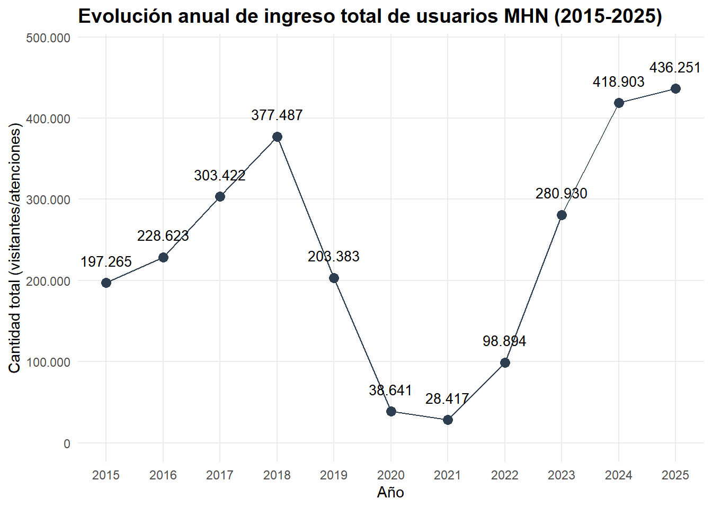
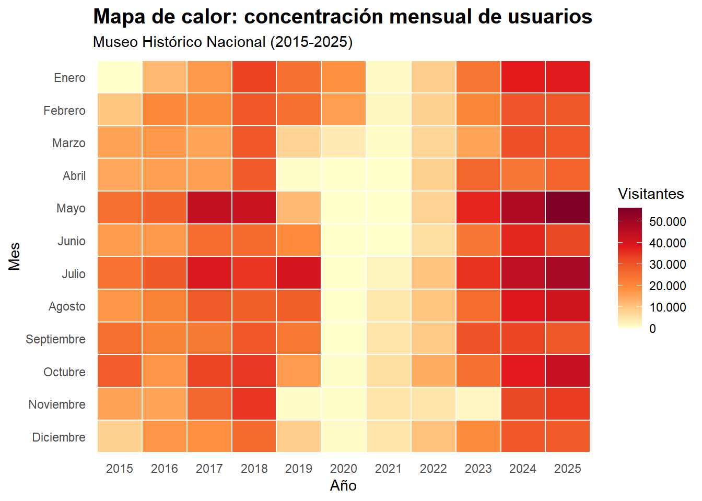
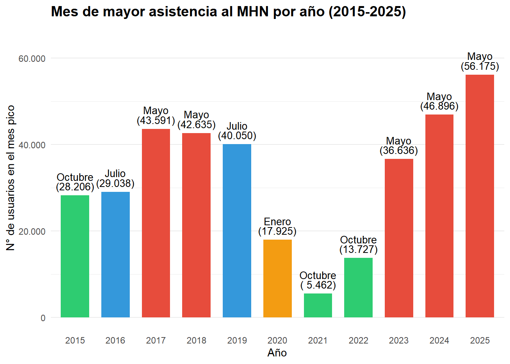
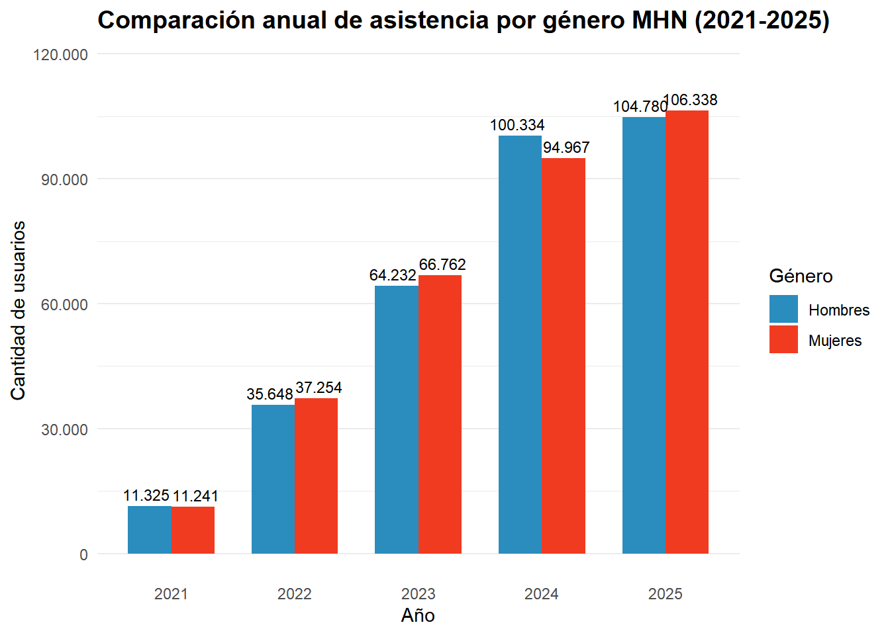
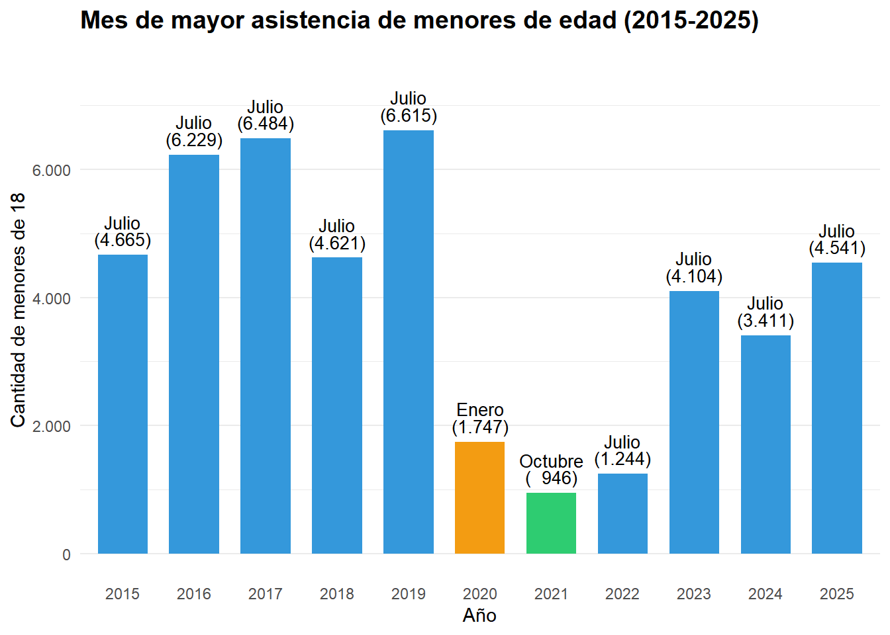
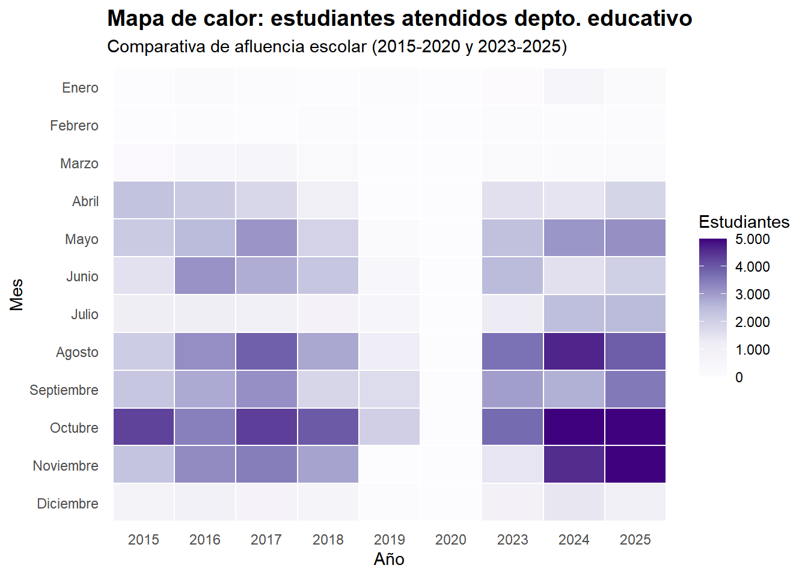
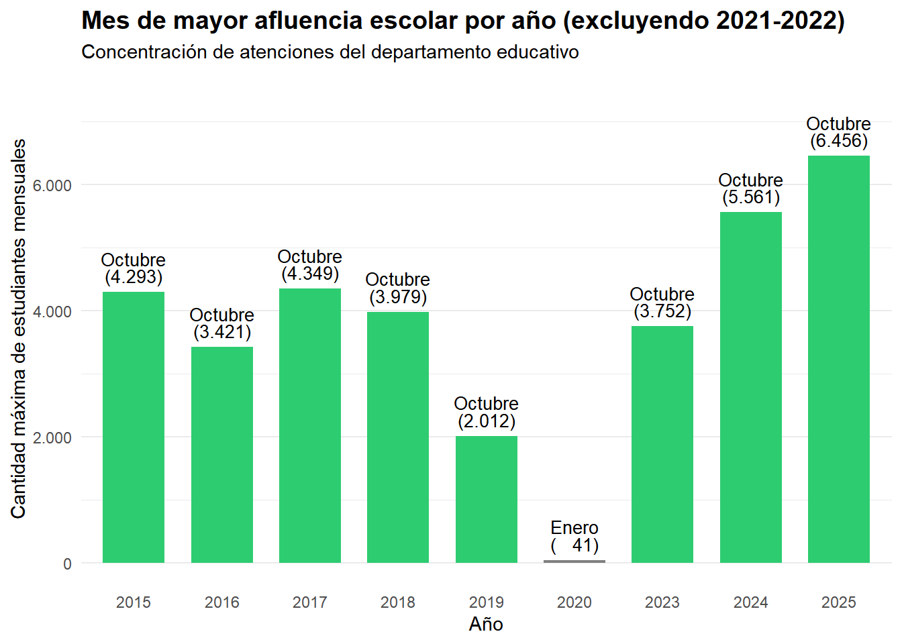
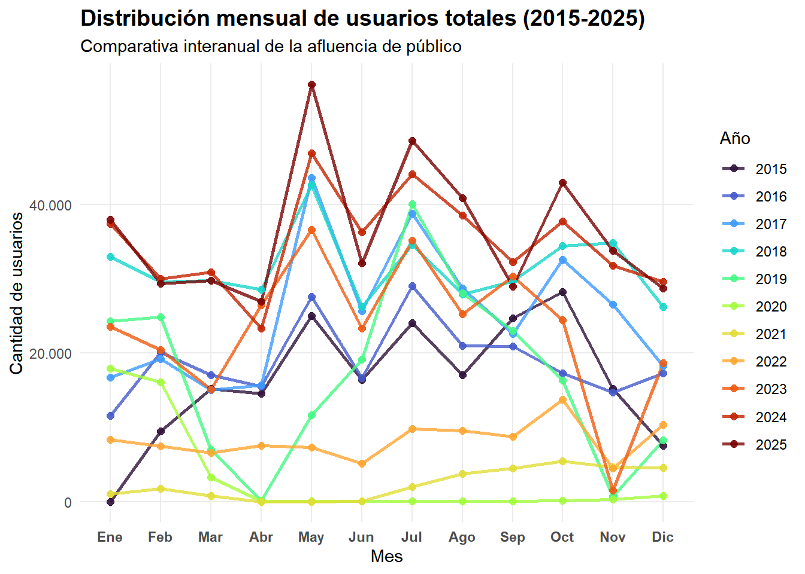

Mostrar código
# carga de paquetes
library(tidyverse)
library(readxl)
library(scales)
library(stringr)
library(dygraphs)
library(xts)El presente documento es un archivo de Quarto que detalla los pasos que se realizaron para el análisis de las bases de datos de público del Museo Histórico Nacional de los años 2015 a 2025. Un archivo Quarto es un documento de texto plano que integra código ejecutable con texto narrativo para crear documentos dinámicos y reproducibles.

El flujo de trabajo en Quarto permite integrar distintos lenguajes de programación en una plataforma procesadora de código que facilita el renderizado de archivos de distinto tipo (HTML, PDF, Word, entre otros).
Asimismo, esta forma de trabajo facilita la reproducibilidad de los documentos, permitiendo que a partir de un archivo .qmd se puedan re-ejecutar los procesos de transformación de variables y generación de gráficos, obteniendo los mismos resultados.
Previo al trabajo en R, se hicieron algunas modificaciones en los archivos excel de las bases de datos:
En la base de 2017 se pasan los casos de “OTROS USUARIOS - EXPOSICIONES ITINERANTES DEL MUSEO HISTORICO NACIONAL AÑO 2017” a los respectivos meses de columna “adultos”.
En la base de 2018 se pasan los casos de la columna “findesemana” a la columna “domingosyfestivos”, ya que 2018 era la única base con esa columna.
# carga de paquetes
library(tidyverse)
library(readxl)
library(scales)
library(stringr)
library(dygraphs)
library(xts)# 1. Definir la ruta relativa
carpeta_datos <- "datos"
# 2. Listar todos los archivos excel que empiezan con "base"
archivos <- list.files(path = carpeta_datos,
pattern = "base.*\\.xlsx$",
full.names = TRUE)
# 3. Función de carga personalizada (Limpia la estructura, no los datos)
leer_museo <- function(ruta) {
read_excel(ruta) %>%
# Pone todos los nombres de columnas en minúsculas (evita 'Mes' vs 'mes')
rename_with(tolower)}
# 4. Leer y unir todos los archivos usando la función personalizada
mhn_total <- archivos %>%
set_names(basename(.)) %>%
map_df(~leer_museo(.x), .id = "archivo_origen")
# 5. Limpieza inicial: extraer el año y organizar
mhn_total <- mhn_total %>%
mutate(
# Extrae los 4 números del nombre del archivo
anio_base = as.numeric(str_extract(archivo_origen, "\\d{4}"))
) %>%
select(anio_base, everything(), -archivo_origen)
# 6. Verificar la carga
view(mhn_total)En el caso del 2020, se decide pasar los casos de las columnas “hombre”, “mujer”, y “adulto_mayor” a la columna “adultos”, ya que solo se tenían registros de noviembre y diciembre, y en noviembre se solapaban los casos.
mhn_limpio <- mhn_total %>%
mutate(
# 1. Definimos la condición una sola vez
is_target = anio_base == 2020 & mes %in% c("noviembre", "diciembre"),
# 2. Sumamos directamente
adultos = if_else(is_target, adultos + hombre + mujer + adulto_mayor, adultos),
# 3. Limpiamos las columnas de desglose para esos casos
across(c(hombre, mujer, adulto_mayor), ~ if_else(is_target, NA_real_, .x))
) %>%
select(-is_target) # Borramos el flag auxiliarEn el caso de 2022, por motivos de coherencia entre las variables de la base, se pasan los casos de la columna “Grupos sin atención Dpto. Educativo. Registrados en Libro de Boletería” a la columna “Otros Grupos sin guía”.
mhn_limpio <- mhn_total %>%
mutate(
# Movemos los datos solo si estamos en el año 2022
otros_grupos_singuia = ifelse(anio_base == 2022,
`grupos sin atencion dpto. educativo. registrados en libro de boleteria`,
otros_grupos_singuia)
) %>%
# Eliminamos la columna original para limpiar el dataframe
select(-`grupos sin atencion dpto. educativo. registrados en libro de boleteria`)# 1. Crear el resumen anual sumando todas las columnas numéricas
mhn_anual <- mhn_limpio %>%
group_by(anio_base) %>%
# 1. Al estar agrupado, 'across' suma todo lo numérico ignorando automáticamente 'anio_base'
summarise(across(where(is.numeric), ~sum(.x, na.rm = TRUE))) %>%
ungroup() %>%
# 2. Aquí anio_base ya volvió a ser una columna normal, así que sí la excluimos de la suma horizontal
mutate(asistencia_total = rowSums(select(., -anio_base), na.rm = TRUE)) %>%
select(anio_base, asistencia_total)
# 2. Generar el gráfico (geom_line + geom_point)
ggplot(mhn_anual, aes(x = anio_base, y = asistencia_total)) +
geom_line(color = "#2c3e50", size = 0.5) +
geom_point(color = "#2c3e50", size = 3) +
# Agregamos los números sobre los puntos para mejor lectura
geom_text(aes(label = comma(asistencia_total, big.mark = ".")),
vjust = -1.5, size = 3.5, color = "black") +
scale_x_continuous(breaks = 2015:2025) +
# Formateamos el eje Y para que no muestre notación científica (ej. 4e+05)
scale_y_continuous(labels = comma_format(big.mark = ".", decimal.mark = ","),
limits = c(0, max(mhn_anual$asistencia_total) * 1.1)) +
theme_minimal() +
labs(
title = "Evolución anual de ingreso total de usuarios MHN (2015-2025)",
x = "Año",
y = "Cantidad total (visitantes/atenciones)"
) +
theme(
plot.title = element_text(face = "bold", size = 14),
panel.grid.minor = element_blank()
)
# 1. Preparar los datos
mhn_heatmap <- mhn_limpio %>%
# Calcular el total por mes y año
mutate(total_mes = rowSums(across(where(is.numeric) & !c(anio_base)), na.rm = TRUE)) %>%
group_by(anio_base, mes) %>%
summarise(total_visitantes = max(total_mes, na.rm = TRUE)) %>% # max() o sum() funciona si hay 1 fila por mes
ungroup() %>%
# Transformar 'mes' en un factor ordenado cronológicamente
mutate(mes = factor(tolower(mes), levels = rev(c("enero", "febrero", "marzo", "abril", "mayo", "junio",
"julio", "agosto", "septiembre", "octubre", "noviembre", "diciembre")),
labels = rev(c("Enero", "Febrero", "Marzo", "Abril", "Mayo", "Junio",
"Julio", "Agosto", "Septiembre", "Octubre", "Noviembre", "Diciembre"))))
# 2. Generar el Heatmap
ggplot(mhn_heatmap, aes(x = factor(anio_base), y = mes, fill = total_visitantes)) +
# geom_tile dibuja los cuadrados del mapa de calor. 'color="white"' hace la grilla de separación.
geom_tile(color = "white", size = 0.5) +
# Escala de colores: De amarillo claro (bajo) a rojo oscuro (alto)
scale_fill_gradientn(colors = c("#ffffcc", "#fd8d3c", "#e31a1c", "#800026"),
labels = comma_format(big.mark = ".", decimal.mark = ",")) +
theme_minimal() +
labs(
title = "Mapa de calor: concentración mensual de usuarios",
subtitle = "Museo Histórico Nacional (2015-2025)",
x = "Año",
y = "Mes",
fill = "Visitantes"
) +
theme(
plot.title = element_text(face = "bold", size = 15),
panel.grid = element_blank(), # Quitamos las grillas de fondo porque geom_tile ya tiene borde
axis.text.x = element_text(angle = 0, hjust = 0.5),
legend.position = "right"
)
mhn_mes_max <- mhn_limpio %>%
# 1. Calculamos el total mensual sumando todas las columnas numéricas (excepto el año)
mutate(total_mes = rowSums(across(where(is.numeric) & !c(anio_base)), na.rm = TRUE)) %>%
# 2. Agrupamos por año
group_by(anio_base) %>%
# 3. Extraemos solo la fila con el valor máximo de 'total_mes' para cada año
slice_max(order_by = total_mes, n = 1) %>%
# 4. Seleccionamos las columnas relevantes para la tabla final
select(anio_base, mes, total_mes) %>%
ungroup()
# Ver el resultado
print(mhn_mes_max)# A tibble: 11 × 3
anio_base mes total_mes
<dbl> <chr> <dbl>
1 2015 octubre 28206
2 2016 julio 29038
3 2017 mayo 43591
4 2018 mayo 42635
5 2019 julio 40050
6 2020 enero 17925
7 2021 octubre 5462
8 2022 octubre 13727
9 2023 mayo 36636
10 2024 mayo 46896
11 2025 mayo 56175# Gráfico
# 1. Paleta de colores
colores_meses <- c(
"mayo" = "#e74c3c",
"julio" = "#3498db",
"octubre" = "#2ecc71",
"enero" = "#f39c12"
)
# 2. Generar el gráfico corregido
ggplot(mhn_mes_max, aes(x = factor(anio_base), y = total_mes, fill = mes)) +
geom_col(width = 0.7) +
# CORRECCIÓN NUMÉRICA Y DE TEXTO
# str_to_title(mes) transforma "mayo" en "Mayo" solo visualmente
# format() reemplaza a comma() para evitar la advertencia de marcas decimales
geom_text(aes(label = paste0(str_to_title(mes), "\n(", format(total_mes, big.mark = ".", scientific = FALSE), ")")),
vjust = -0.3, size = 3.5, lineheight = 0.8) +
# Aplicar colores
scale_fill_manual(values = colores_meses) +
# Eje Y sin notación científica y con separador de miles correcto
scale_y_continuous(labels = function(x) format(x, big.mark = ".", scientific = FALSE),
limits = c(0, max(mhn_mes_max$total_mes) * 1.15)) +
theme_minimal() +
labs(
title = "Mes de mayor asistencia al MHN por año (2015-2025)",
x = "Año",
y = "N° de usuarios en el mes pico",
fill = "Mes Pico"
) +
theme(
plot.title = element_text(face = "bold", size = 14),
panel.grid.major.x = element_blank(),
legend.position = "none"
)
# 1. Preparar y pivotar los datos
mhn_genero <- mhn_limpio %>%
filter(anio_base >= 2021) %>%
group_by(anio_base) %>%
# Sumamos los totales anuales de ambas columnas
summarise(
Hombres = sum(hombre, na.rm = TRUE),
Mujeres = sum(mujer, na.rm = TRUE)
) %>%
# Pivotar: Transformamos las columnas Hombres/Mujeres en dos columnas: 'Genero' y 'Cantidad'
pivot_longer(cols = c(Hombres, Mujeres),
names_to = "Genero",
values_to = "Cantidad")
# 2. Generar el gráfico de barras agrupadas
ggplot(mhn_genero, aes(x = factor(anio_base), y = Cantidad, fill = Genero)) +
# position = "dodge" pone las barras una al lado de la otra en vez de apilarlas
geom_col(position = "dodge", width = 0.7) +
# Agregamos las etiquetas de datos sobre cada barra
geom_text(aes(label = comma(Cantidad, big.mark = ".")),
position = position_dodge(width = 0.8),
vjust = -0.5, size = 3.0) +
# Colores para distinguir los géneros (puedes cambiarlos según la paleta de tu informe)
scale_fill_manual(values = c("Hombres" = "#2b8cbe", "Mujeres" = "#f03b20")) +
scale_y_continuous(labels = comma_format(big.mark = ".", decimal.mark = ","),
limits = c(0, max(mhn_genero$Cantidad) * 1.1)) +
theme_minimal() +
labs(
title = "Comparación anual de asistencia por género MHN (2021-2025)",
x = "Año",
y = "Cantidad de usuarios",
fill = "Género"
) +
theme(
plot.title = element_text(face = "bold", size = 14),
panel.grid.major.x = element_blank() # Quita líneas verticales para más limpieza visual
)
# 1. Encontrar el mes máximo para menores
mhn_max_menores <- mhn_limpio %>%
group_by(anio_base, mes) %>%
summarise(total_menores = sum(menores18, na.rm = TRUE), .groups = 'drop') %>%
group_by(anio_base) %>%
slice_max(order_by = total_menores, n = 1) %>%
ungroup()
# 2. Definir los colores
colores_menores <- c(
"julio" = "#3498db", # Azul (Vacaciones de invierno)
"octubre" = "#2ecc71", # Verde (Primavera)
"enero" = "#f39c12" # Naranja (Verano)
)
# 3. Generar el gráfico
ggplot(mhn_max_menores, aes(x = factor(anio_base), y = total_menores, fill = mes)) +
geom_col(width = 0.7) +
geom_text(aes(label = paste0(str_to_title(mes), "\n(", format(total_menores, big.mark = ".", scientific = FALSE), ")")),
vjust = -0.3, size = 3.5, lineheight = 0.8) +
scale_fill_manual(values = colores_menores) +
scale_y_continuous(labels = function(x) format(x, big.mark = ".", scientific = FALSE),
limits = c(0, max(mhn_max_menores$total_menores) * 1.15)) +
theme_minimal() +
labs(
title = "Mes de mayor asistencia de menores de edad (2015-2025)",
x = "Año",
y = "Cantidad de menores de 18",
fill = "Mes Pico"
) +
theme(
plot.title = element_text(face = "bold", size = 14),
panel.grid.major.x = element_blank(),
legend.position = "none"
)
# 1. Preparar los datos
mhn_estudiantes_heat <- mhn_limpio %>%
# Omitimos 2021 y 2022 según lo definido
filter(!anio_base %in% c(2021, 2022)) %>%
group_by(anio_base, mes) %>%
summarise(total_est = sum(estudiantes_depto_educativo, na.rm = TRUE), .groups = 'drop') %>%
# Factorizamos el mes en orden inverso para que Enero quede arriba en el gráfico
mutate(mes = factor(tolower(mes),
levels = rev(c("enero", "febrero", "marzo", "abril", "mayo", "junio",
"julio", "agosto", "septiembre", "octubre", "noviembre", "diciembre")),
labels = rev(c("Enero", "Febrero", "Marzo", "Abril", "Mayo", "Junio",
"Julio", "Agosto", "Septiembre", "Octubre", "Noviembre", "Diciembre"))))
# Generación de gráfico
ggplot(mhn_estudiantes_heat, aes(x = factor(anio_base), y = mes, fill = total_est)) +
geom_tile(color = "white", size = 0.5) +
# AÑADIMOS 'limits' *ajustar según el limite que se quiera
scale_fill_gradientn(colors = c("#fcfbfd", "#efedf5", "#bcbddc", "#756bb1", "#3f007d"),
labels = comma_format(big.mark = ".", decimal.mark = ","),
limits = c(0, 5000),
na.value = "#3f007d") + # Si algo pasa de 5k, se pinta del color más oscuro
theme_minimal() +
labs(
title = "Mapa de calor: estudiantes atendidos depto. educativo",
subtitle = "Comparativa de afluencia escolar (2015-2020 y 2023-2025)",
x = "Año", y = "Mes", fill = "Estudiantes"
) +
theme(
plot.title = element_text(face = "bold", size = 14),
panel.grid = element_blank(), axis.text.x = element_text(angle = 0, hjust = 0.5)
)
Existen 3 gráficos que no fueron incluidos en la versión final del informe, sin embargo, queda explicitado su código a continuación:
En primer lugar, un gráfico de barras que indica el mes de mayor afluencia de estudiantes atendidos por el departamento educativo desde 2015 hasta 2025 (excluyendo 2021 y 2022 ya que no habían datos disponibles). El motivo de la exclusión es que el mapa de calor de estudiantes atendidos por el depto. educativo expresa de mejor manera la distribución de los datos, pudiendo ver no solo el mes con mayor concentración, sino que también la distribución del resto de los meses.
# 1. Preparar los datos (Excluyendo 2021 y 2022)
mhn_max_estudiantes <- mhn_limpio %>%
filter(!anio_base %in% c(2021, 2022)) %>%
group_by(anio_base, mes) %>%
summarise(total_estudiantes = sum(estudiantes_depto_educativo, na.rm = TRUE), .groups = 'drop') %>%
group_by(anio_base) %>%
# Extraemos el mes con mayor cantidad de estudiantes por cada año
slice_max(order_by = total_estudiantes, n = 1) %>%
ungroup()
# 2. Definir paleta de colores para los meses resultantes
colores_estudiantes <- c(
"octubre" = "#2ecc71", # Verde (Primavera/Cierre escolar)
"noviembre" = "#9b59b6", # Morado (Meses finales)
"agosto" = "#f1c40f" # Amarillo (Regreso de vacaciones)
)
# 3. Generar el Gráfico de Barras de Mes Pico
ggplot(mhn_max_estudiantes, aes(x = factor(anio_base), y = total_estudiantes, fill = mes)) +
geom_col(width = 0.7) +
# Etiquetas de texto sobre las barras (Mes + Total formateado)
geom_text(aes(label = paste0(str_to_title(mes), "\n(", format(total_estudiantes, big.mark = ".", scientific = FALSE), ")")),
vjust = -0.3, size = 3.5, lineheight = 0.8) +
scale_fill_manual(values = colores_estudiantes) +
scale_y_continuous(labels = function(x) format(x, big.mark = ".", scientific = FALSE),
limits = c(0, max(mhn_max_estudiantes$total_estudiantes) * 1.15)) +
theme_minimal() +
labs(
title = "Mes de mayor afluencia escolar por año (excluyendo 2021-2022)",
subtitle = "Concentración de atenciones del departamento educativo",
x = "Año",
y = "Cantidad máxima de estudiantes mensuales",
fill = "Mes pico"
) +
theme(
plot.title = element_text(face = "bold", size = 14),
panel.grid.major.x = element_blank(),
legend.position = "none" # Se oculta la leyenda para dar más espacio a las barras
)
También, un gráfico de líneas que resume la distribución mensual de usuarios por año. Cada línea representa un año con un color distinto, teniendo en el eje Y la cantidad de usuarios y en el eje X los meses del año. La exclusión de esta figura recae en que al tener 10 líneas trazadas en un gráfico se dificulta la visualización de los datos que se quieren exponer, sin embargo, sigue siendo útil para observar una silueta general de la década.
# 1. Preparar los datos
mhn_lineas <- mhn_limpio %>%
# Sumamos todas las columnas numéricas para obtener el total del mes
# (Ignoramos la columna anio_base en la suma)
mutate(total_mes = rowSums(across(where(is.numeric) & !c(anio_base)), na.rm = TRUE)) %>%
group_by(anio_base, mes) %>%
summarise(visitantes = sum(total_mes, na.rm = TRUE), .groups = 'drop') %>%
# Factorizamos los meses para que mantengan el orden cronológico en el eje X
mutate(mes_factor = factor(tolower(mes),
levels = c("enero", "febrero", "marzo", "abril", "mayo", "junio",
"julio", "agosto", "septiembre", "octubre", "noviembre", "diciembre"),
labels = c("Ene", "Feb", "Mar", "Abr", "May", "Jun",
"Jul", "Ago", "Sep", "Oct", "Nov", "Dic"))) %>%
filter(!is.na(mes_factor))
# 2. Generar el gráfico de líneas
ggplot(mhn_lineas, aes(x = mes_factor, y = visitantes, group = factor(anio_base), color = factor(anio_base))) +
geom_line(size = 1, alpha = 0.8) +
geom_point(size = 2, alpha = 0.9) +
# Usamos la paleta viridis para que los años tengan una transición de color lógica
scale_color_viridis_d(option = "turbo") +
scale_y_continuous(labels = comma_format(big.mark = ".", decimal.mark = ",")) +
theme_minimal() +
labs(
title = "Distribución mensual de usuarios totales (2015-2025)",
subtitle = "Comparativa interanual de la afluencia de público",
x = "Mes",
y = "Cantidad de usuarios",
color = "Año"
) +
theme(
plot.title = element_text(face = "bold", size = 14),
panel.grid.minor = element_blank(),
axis.text.x = element_text(angle = 0, face = "bold"),
legend.position = "right"
)
Y, finalmente, el presente gráfico permite el paneo, hacer zoom, y destacar ciertos períodos del ingreso de público de los últimos 10 años del MHN. Este gráfico fue omitido por que este tipo de visualizaciones no son compatibles con documentos de texto estáticos (Word o PDF), ya que están diseñadas para ser desplegadas en formatos web como HTML.
# 1. Crear un diccionario para convertir los nombres de los meses a números
meses_a_numeros <- c(
"enero" = "01", "febrero" = "02", "marzo" = "03", "abril" = "04",
"mayo" = "05", "junio" = "06", "julio" = "07", "agosto" = "08",
"septiembre" = "09", "octubre" = "10", "noviembre" = "11", "diciembre" = "12"
)
# 2. Procesar los datos a nivel mensual continuos
mhn_mensual <- mhn_limpio %>%
# Sumamos horizontalmente las columnas numéricas para obtener el total de cada fila
mutate(total_registro = rowSums(across(where(is.numeric) & !c(anio_base)), na.rm = TRUE)) %>%
# Agrupamos por año y por mes
group_by(anio_base, mes) %>%
summarise(visitantes = sum(total_registro, na.rm = TRUE), .groups = 'drop') %>%
# Limpiamos el texto de la columna mes para evitar problemas con espacios o mayúsculas
mutate(mes_limpio = tolower(str_trim(mes))) %>%
# Asignamos el número de mes correspondiente usando el diccionario
mutate(mes_num = meses_a_numeros[mes_limpio]) %>%
# Filtramos posibles filas vacías o meses mal calzados
filter(!is.na(mes_num)) %>%
# Construimos la fecha formal (ej: "2015-05-01")
mutate(fecha = as.Date(paste(anio_base, mes_num, "01", sep = "-"))) %>%
# ORDENAMOS cronológicamente para que la línea no se cruce
arrange(fecha)
# 3. Convertir el dataframe a un objeto de serie de tiempo (xts)
mhn_ts_mensual <- xts(mhn_mensual$visitantes, order.by = mhn_mensual$fecha)
# 4. Generar el dygraph interactivo mensual
dygraph(mhn_ts_mensual,
main = "Evolución Mensual Continua de Usuarios (2015-2025)",
ylab = "Cantidad de Visitantes") %>%
# Configuración visual de la línea y el fondo
dyOptions(fillGraph = TRUE, fillAlpha = 0.1, colors = "#3f007d", strokeWidth = 2) %>%
# El selector de rango inferior para explorar la década
dyRangeSelector(dateWindow = c("2015-01-01", "2025-12-01")) %>%
# Formateo chileno para los números (separadores de miles con punto) al pasar el cursor
dyAxis("y", valueFormatter = "function(v){return v.toLocaleString('es-CL');}",
axisLabelFormatter = "function(v){return v.toLocaleString('es-CL');}")